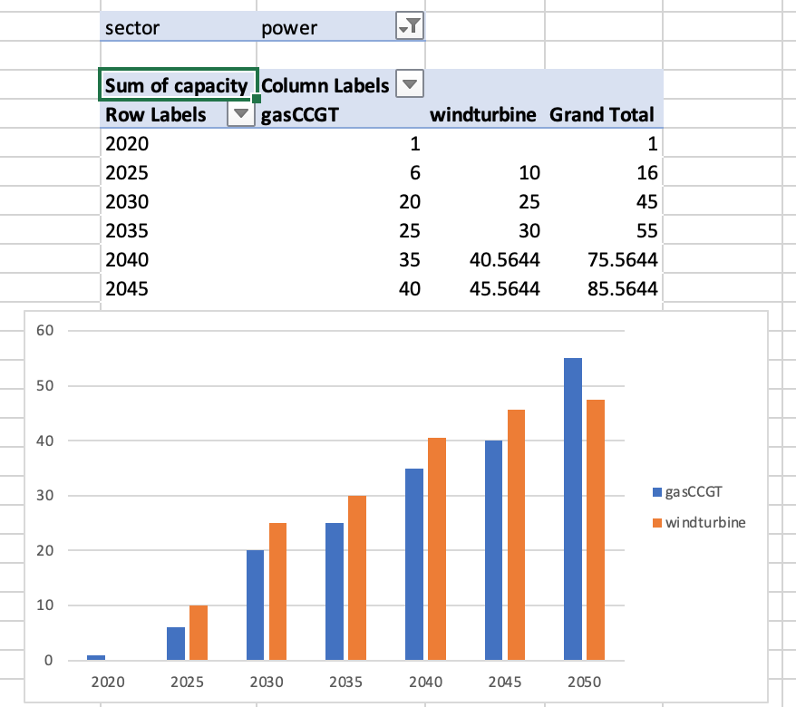

Previously, we added an exogenous service demand. That is, we explicitly specfied what the demand would be per year.
However, we may not know what the electricity demand is per year into the future. Instead, we may conclude that our electricity demand is a function of the GDP and population of a particular region.
To accommodate such scenarios, MUSE enables us to choose a regression functoin that estimates service demands from GDP and population, which may be more certain in your case. In this hands-on we find out how this can be done.
For this work, we will use the default example, as before, from the MUSE repository.
The full scenario files for the default example can be found at the zenodo link below. https://zenodo.org/record/6092720#.YgvcMy-l1pQ
We recommend that you download these files and save them to a location convenient to you, as we will be amending these throughout this tutorial.
Similarly to before, we must amend the preset folder for this. However, we no longer require the Residential2020Consumption.csv and Residential2050Consumption.csv files. These files set the exogenous service demand for the residential sector.
We must replace these files, with the following files:
The example files for each of those just mentioned can be found in the zenodo link below. https://zenodo.org/record/6092720#.YgvcMy-l1pQ
Download these files and save them within the preset folder.
Next, we must amend our toml file to include our new way of calculating the preset service demand.
Editting the TOML file to include this can be done relatively quickly if we know the variable names.
In the second bottom section of the toml file, you will see the following section:
[sectors.residential_presets]
type = 'presets'
priority = 0
consumption_path= "{path}/technodata/preset/*Consumption.csv"This enables us to run the model in exogenous mode, but now we would like to run the model from the files previously mentioned. This can be done by linking new variables to the new files, as follows:
[sectors.residential_presets]
type = 'presets'
priority = 0
timeslice_shares_path = '{path}/technodata/preset/TimesliceSharepreset.csv'
macrodrivers_path = '{path}/technodata/preset/Macrodrivers.csv'
regression_path = '{path}/technodata/preset/regressionparameters.csv'We’ve just linked the new files to MUSE.
Figure 5.1, below, shows the power sector over the future horizon. We can see a significantly higher installed capacity, as the demand has increased due to the correlation of GDP PPP and population.

Figure 5.1: Visualisation of the power sector
In this hands-on we added a service demand by correlation. Specifically, GDP purchasing power parity and population. We saw that we could make inferences on how the demand will grow based on these using seperate files in MUSE.